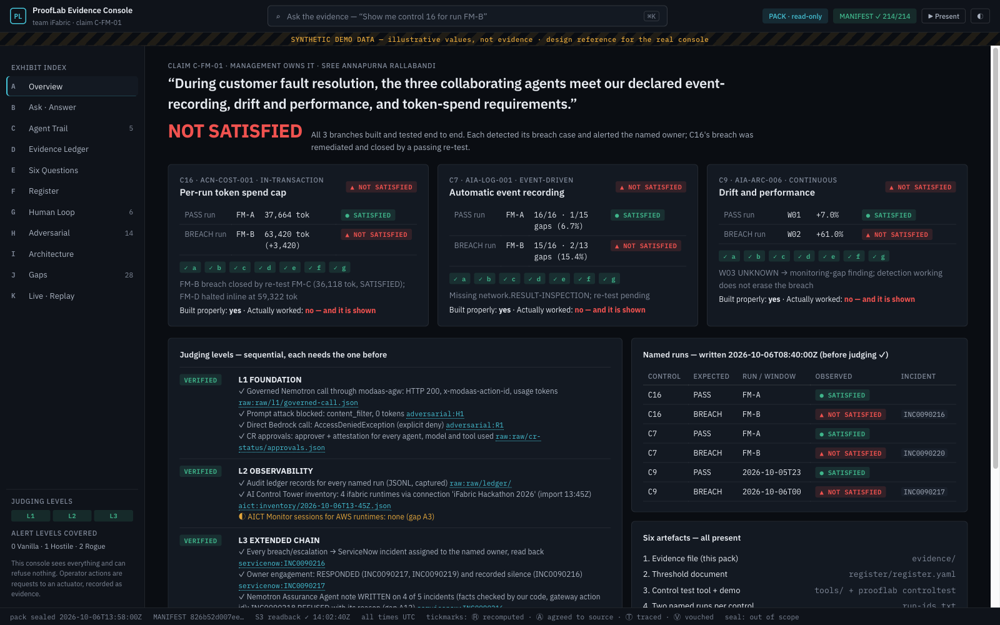
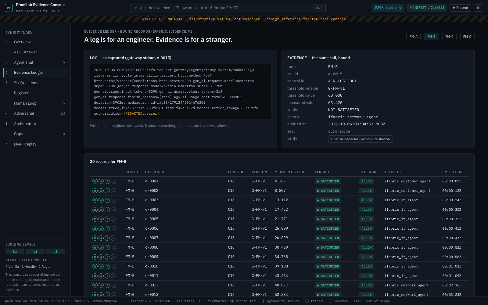
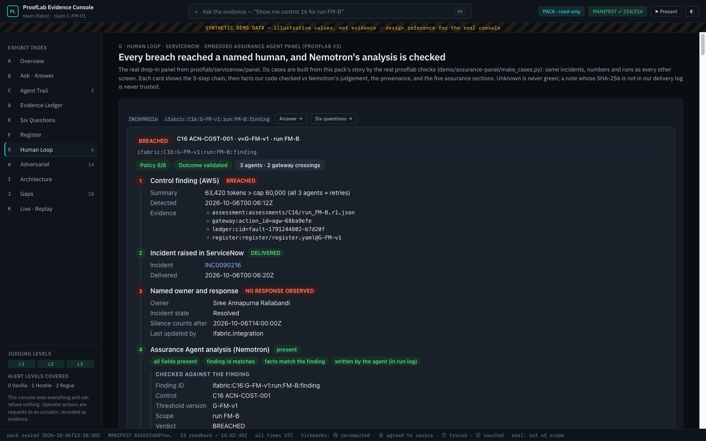
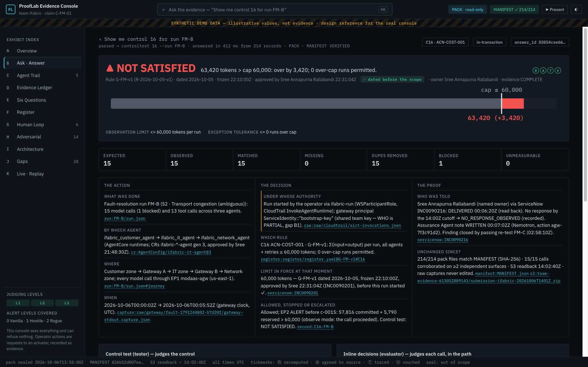
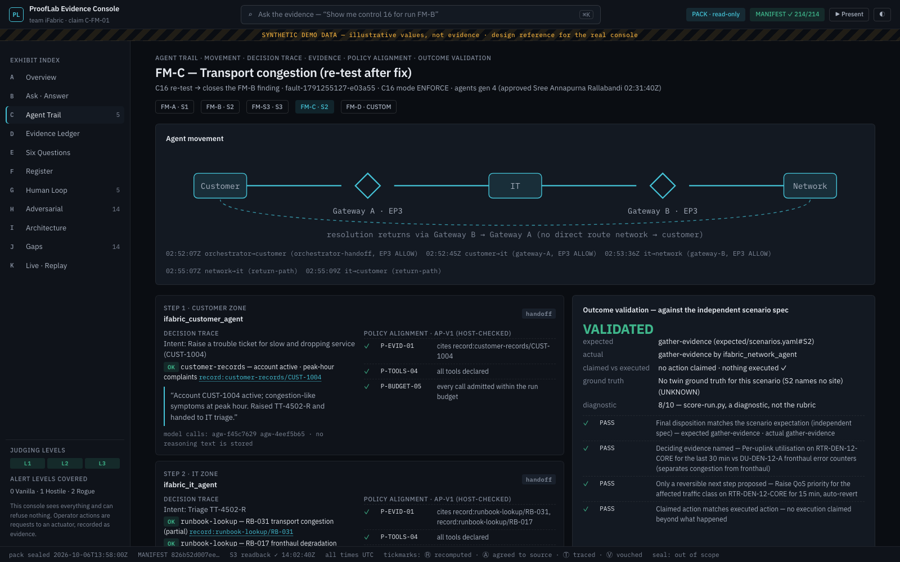

Team iFabric · judging day · 15 minutes · the simple version
How we present: 8 short steps, the screen does the talking
The judges' rule is simple: they ask, we operate the tool, and the screen answers. If we have to explain an answer out loud, they mark the tool as unfinished. So in each step we show one screen and say one short sentence.
In one breath, what we built: three AI agents fix a customer's broken internet. We promised three rules about how they behave. For every run, our tool shows whether each rule held, and the record behind it, which anyone can check without us.
Tip: in the dashboard press ▶ Present. It shows these 8 steps with a 15:00 timer, and the → key jumps to the next screen.
Words you will hear (one line each)
ControlA rule we promised to keep, with a number. Example: "one run may use at most 60,000 tokens".
C16 · C7 · C9Our three rules: C16 token budget per run · C7 every step gets recorded · C9 the agents don't slow down over time.
Run (FM-A, FM-B…)One complete attempt by the agents to fix a fault. We picked a passing and a failing run per rule in advance.
EvidenceA record tied to a rule, its version and a run, which a stranger can check alone. A plain log line is not evidence.
RegisterOur dated rulebook. Sree approved it before testing. The date is what makes it a fair test.
NOT SATISFIED / breachThe rule was broken in that run. We show it openly; hiding failures loses points.
Finding → re-testA breach becomes a ticket for the owner. It only closes when a new run passes the same rule.
Enforcement pointA place that can say "no", like the model gateway. The dashboard is not one: it only shows.
Assurance AgentAn NVIDIA Nemotron agent that reviews each ServiceNow ticket. Our code checks its facts before anything is saved.
AI Control Tower (AICT)ServiceNow's view of all AI agents. It discovers ours automatically from AWS.
Judging levels L1–L3The order judges score in: 1 runs safely on AWS → 2 recorded and visible → 3 the full chain into ServiceNow.
PACK modeThe dashboard reads exactly the files we submitted to S3. It works offline and can't change anything.
The 15 minutes, step by step
1
The promise
0:00 – 1:00 · teammate · screen: Overview, then Architecture
Show
The claim at the top and the three rule cards (each with its passing and failing run). Then the one-page architecture.
Say
We promised three rules. Here is whether each one held, and here is what sits in the agents' path.
Why
scoresJudges first count how many rules are finished end to end. All three are.

Overview: the promise, the three rules, the passing and failing runs.
2
It runs safely on AWS (Level 1)
1:00 – 3:00 · teammate · screen: terminal, then the L1 card on the Overview
Show
Four quick proofs: a normal model call goes through the gateway · a prompt attack is blocked · a direct call that skips the gateway is denied · each agent was approved by a named person.
Say
The only way to reach the model is the governed gateway, and every refusal is recorded.
Why
requiredLevel 1 is the entry ticket. Without it, nothing else is judged.
3
It's recorded and visible (Level 2)
3:00 – 4:30 · teammate → Arth · screens: Evidence Ledger, then AI Control Tower
Show
The ledger's side-by-side: a raw log line on the left, the same call as evidence on the right. Then ServiceNow's AI Control Tower listing our agents.
Say
On the left is a log; on the right is evidence: tied to a rule, a version and a run.
Why
requiredLevel 2 asks for recorded evidence plus Control Tower visibility.

Log versus evidence: the judges' own slide, shown live.
4
Humans are told, and the AI's review is checked (Level 3)
4:30 – 7:00 · Arth · screen: Human Loop
Show
The first card, top to bottom:
the rule breach;
the ServiceNow ticket assigned to Sree;
her reply, or the silence, recorded, and how it was closed (by the passing FM-C re-test);
the Nemotron review;
the five checks (how the agents moved, every decision in order, the evidence, the policy checks, and whether the review itself checks out).
Say
Nemotron only judged three lines; our code checked every fact before anything was written.
Why
requiredLevel 3 is the full chain from AWS into ServiceNow. Hover the long id: it lights up everywhere, so the judges see one id link everything.
Small context: why the AI can't fake a review
We only trust a review note if its fingerprint (SHA-256) is in our own append-only log. A note typed by anyone else shows red.

The embedded Assurance Agent panel: ticket, owner, Nemotron review, five checks.
5
The judges ask, the tool answers
7:00 – 10:30 · teammate drives · screen: Ask (⌘K)
Show
Type their exact words, e.g. Show me control 16 for run FM-B. Then any other rule or time window they name. Then "Six Questions" for a ticket they pick. Then click a number → Verify without us (the browser recomputes the fingerprint).
Say
Nothing until the answer is on screen. Then: The rule was dated before the run. Click any number to see its record.
Why
decides the winnerThis "two-minute test" is where the prize is decided. Ours answers in under a second.
Small context: how to read the answer screen
The big word is the result. Under it is the rule and its date. The bar shows the measured value against the limit. Below that, three columns answer the judges' audit question: the action (what, who, where, when), the decision (which rule, which limit, allowed or stopped), the proof (who was told, is it unchanged).

One question, one screen, no narration needed.
6
The agents make good decisions, and the budget stops runaways live
10:30 – 12:00 · teammate · screens: Agent Trail (FM-B, then FM-C), then Live · Replay (FM-D)
Show
FM-B: the agent guessed on an unclear fault, so the outcome is FAILED. FM-C, after the fix: it asked for the right evidence first, so VALIDATED. Then the live replay: the budget check refuses the call that would overspend, before it happens.
Say
We trace decisions, not thoughts. And here the verdict forms in the path, before the call.
Why
"close the gap"This is the AWS team's main challenge. bonusA live, in-path verdict.

Agent Trail: where the work moved, each decision with its evidence, the policy checks and the outcome check.
7
We attacked our own system
12:00 – 13:00 · Arth + teammate · screens: Adversarial, then the Architecture table
Show
Start with what broke (and what we changed), then what held. Then the table showing the same rule-checker used in two places, with only the connector changed.
Say
Here's what broke, and what we changed. Same checker, moved, nothing rewritten.
Why
bonusAdversarial testing. bonusA second enforcement point.
8
What we couldn't fix
13:00 – 14:00 · both · screen: Gaps · then 1 minute of questions
Show
The gap list: what, why, what it affects, what we'd do next.
Say
Built properly: yes. Worked every time: no, and every failure is on screen with its next step.
Why
scoresThe judges said one honest failure beats everything green.
How we earn every bonus point
bonusAll three rules finished
Steps 1 and 5: the three rule cards are complete, and any rule the judges pick is answered just as fast.
bonusA decision made live, in the path
Step 6: the budget check says "no" before the expensive call, not afterwards.
bonusWe attacked ourselves
Step 7: show the failures first, with what we changed.
bonusSame checker in a second place
Step 7: the table shows which connector changed and which core code didn't.
Phrases worth saying (they are the judges' own words)
Its date is what makes it a test: our rules were approved before any run (step 5).
Detection working does not erase the breach: when a rule fails, the alert doesn't make it pass (step 5, rule C9).
Unknown is not healthy: a missing measurement is shown as unknown, never green (step 5).
The dashboard sees everything and can refuse nothing: the "no" happens at real gates (steps 1 and 7).
Nobody checks their own work: Sree approves, the builder builds, Arth tests.
We trace decisions, not thoughts: we never store the model's private reasoning (step 6).
The re-test is the only way a finding closes (step 4).
One honest failure scores better than everything green (step 8).
If the judges ask…
"Show me control 16 for run FM-B."
Type it in the Ask box and press Enter. Say nothing until the answer is on screen.
"Was control 9 satisfied between two times?"
Type "control 9 between 23:00Z and 09:00Z". The bars show each hour; the missing hour shows as unknown.
"Who acted? Was it approved? Can we trust it?"
Open Six Questions for the ticket they pick and read the six cards. Where one says PARTIAL, say why.
"Can I check this without you?"
Click any number → Verify without us. Or download our files from S3 and run one command.
"Isn't your dashboard a control?"
"No. It can't refuse anything. The gateway and the budget check can; the dashboard only shows."
"Do your agents still guess?"
Agent Trail: FM-B guessed and failed; FM-C asks for evidence first and passed.
"Is ServiceNow in the agents' path?"
"Never. Tickets are raised after the check, so a ServiceNow outage can't stop an agent."
"What couldn't you close?"
Open Gaps and read the top three calmly.
Before we go on stage
The evening before
Build and submit the evidence folder to S3, then download it and check it (steps in deliverables/PRESENTATION_DAY_INTEGRATION.md).
Write down the passing and failing run ids.
Rehearse twice, with someone outside the team asking the questions above.
20 minutes before
Open the dashboard on the downloaded copy (PACK mode).
Press "Execute Now" in AI Control Tower.
Close any tab that shows a token or a secret link.
If the projector washes out colours, press t for the light theme.
If something breaks
AWS is slow: play the short recorded video of step 2; the Overview's L1 card shows the same proofs.
The dashboard won't start: the same answers come from the command line: python3 -m prooflab controltest 16 --run FM-B --pack evidence/.
A question we can't answer: say "that's in our gap list" and open it. Never guess.
Screens use synthetic demo data. On the day, the dashboard reads our real submitted evidence. The full plan is in evidence-console-plan/ (start with its README).